Neutrino Oscillations: Theory and Foundations#
import time
print(' Last version ', time.asctime() )
Last version Sun Mar 22 20:35:20 2026
# general imports
%matplotlib inline
%reload_ext autoreload
%autoreload 2
# numpy and matplotlib
import numpy as np
import pandas as pd
import matplotlib.pyplot as plt
import scipy.stats as stats
import scipy.constants as units
plt.style.context('seaborn-colorblind');
Objective:
Show the evidence for neutrino oscillations.
Indicate the open questions and the future.
Introduction#
Neutrino mixing and oscillations were theoretically introduced in the 1960s.
Davis’ experiment persistently reported since the 1970s less solar neutrino flux than predicted by Bahcall’s standard solar model SSM. That was known as the Solar Neutrino Problem.
In 1997 Super-Kamiokande reported the first evidence of atmospheric neutrino oscillations.
Since then neutrino oscillation has been observed in accelerator and reactor neutrinos.
The current picture of neutrino oscillation with three neutrino flavor and masses is solid, but some inconsistencies exist.
Neutrino oscillations are the only evidence of Physics Beyond the SM.
The origin of neutrino oscillations#
Pontecorvo was the first to introduce the concept of oscillations [1] in 1952.
Z. Maki, M. Nakagawa and S. Sakata introduced the concept of mixing between mass and flavour states [24] in 1962.
And again Pontecorvo associated neutrino mixing and oscillations [25] in 1967.
Oscillation probability: two-family case#
About the derivation of the probability formula:
The basic ingredients:
Uncertainty in momentum at production and detection
Coherence of mass eigen-states over macroscopic distances
Different derivations with the same result:
quantum mechanics with neutrinos as plane waves
quantum mechanics with neutrinos as wave packets
quantum field theory
See P Hernandez’s lectures
{kind=link}
Neutrinos of a given flavour, \(\nu_\alpha\) are produced via CC interactions.
They are a combination of neutrinos of given mass, related via a unitary matrix \(U\)
That propagate in time, \(t\), as eigen-states of the free hamiltonian, \(E_i = \sqrt{p^2 + m^2_i}\)
A neutrino, \(\nu_\beta\), can now interact via CC with an amplitude:
And probability
Let’s consider a 2 families case:
The neutrino time evolution is:
The Amplitude to detect a \(\nu_\beta\) neutrino at time \(t\) is (except for a global phase):
If we approximate \(E_i \simeq p + \frac{m^2_i}{2 p}\) and with \(t \to L\)
Manipulating:
The oscillation probability is:
Where \(\Delta m^2_{21} = m^2_2 - m^2_1\).
This probability depends on two natural parameters:
mixing angle, \(\theta\). If \(\theta = 0\) there are no oscillations. It controls the amplitude.
\(\Delta m^2_{21}\). If neutrinos are mass-degenerate, there is no oscillation. It controls the phase.
The oscillation depends on the relation between \(\Delta m^2\) and \(E/L\).
The oscillation length.
As the observation is at fixed \(L\) the dependence of the probability with \(E\) of the initial \(\nu\) flux is relevant.
We consider 3 cases:
At the first maximum of the oscillation.
We observe the oscillation behavior as a function of \(E\).
We can write the phase and the probability in the relevant units:
Question: Draw the oscillation probability for \(\Delta m^2 = 2.5 \times 10^{-3} \, \mathrm{eV}^{2}\) and \(\theta = \pi/4\) as a function of \(L/E\)
import oscillations
oscillations.plot_posc_intro()
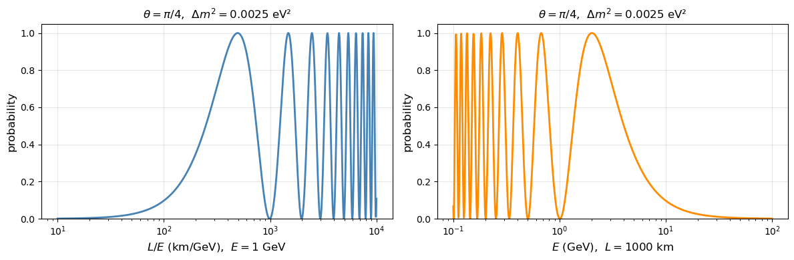
\(E/L \ll \Delta m^2\) the oscillation is fast. We observe the average.
In this case the probability does not depend on \(\Delta m^2\) only on \(\theta\).
It corresponds to the case where neutrinos are decoupled! It does not show the characteristic signature of neutrino oscillations.
\(E/L \gg \Delta m^2\) Oscillation is too small in the detector.
The probability is suppressed:
And we can not separate the two physical parameters \(\Delta m^2\) and \(\theta\).
{kind=link}
Table with the energy, distance and \(\Delta m^2\) ranges accessible by experiments.
Nature has been kind to us with solar and atmospheric neutrinos!
With man-made neutrinos we can have Long and Short Base Line (LBL, SBL) experiments.
Question: Discuss the implications that the probability is invariant with respect to: \(\pm \Delta m^2_{21}\) and \(\theta \to \pi/2 - \theta\).
Interactive oscillation: two families#
Slide the controls to explore how \(\mathcal{P}(\nu_\alpha \to \nu_\beta)\) changes with the mixing angle \(\theta\), the mass-squared difference \(\Delta m^2\), and the propagation distance \(L\). The left plot fixes \(L\) and varies \(E\); the right one shows \(P\) vs \(L/E\).
import oscillations
oscillations.plot_2fam_interactive()
Exercise: Oscillation length and experimental regimes
The two-family oscillation probability depends only on the ratio \(\Delta m^2 L/E\) through the phase: $\( \phi = 1.267\,\frac{\Delta m^2\,[\mathrm{eV}^2]\; L\,[\mathrm{km}]}{E\,[\mathrm{GeV}]} \)\( The oscillation length \)L_{\rm osc} = (\pi/1.267), E/\Delta m^2$ sets the natural scale.
Questions:
Compute \(L_{\rm osc}\) for the atmospheric (\(\Delta m^2_{31} = 2.5\times10^{-3}\) eV\(^2\)) and solar (\(\Delta m^2_{21} = 7.5\times10^{-5}\) eV\(^2\)) scales at \(E = 1\) GeV and at \(E = 3\) MeV. Which scale is probed by SuperKamiokande (\(L\sim 10\)–\(10\,000\) km, \(E\sim 1\) GeV) and which by KamLAND (\(L = 180\) km, \(E\sim 3\) MeV)?
Three detection regimes exist depending on \(L\) relative to \(L_{\rm osc}\): (a) \(L \ll L_{\rm osc}\): no visible oscillation, \(P \approx 1\); (b) \(L \sim L_{\rm osc}\): oscillation resolved; (c) \(L \gg L_{\rm osc}\): rapid oscillations average to \(\langle P \rangle = 1 - \frac{1}{2}\sin^2 2\theta\). Using
oscillations.posc_2fam, plot \(P\) vs \(L/E\) over \(10^0\)–\(10^6\) km/GeV for solar parameters (\(\Delta m^2_{21}\), \(\theta_{12}\)) and identify each regime.The table in the notebook lists energy, distance and target \(\Delta m^2\) for each experiment. Verify numerically that SK-atm, KamLAND and Daya Bay are each designed so that \(\phi \simeq \pi/2\) (first oscillation maximum) at their respective peak energies.
Exercise: Exclusion region in the (\(\Delta m^2\), \(\sin^2 2\theta\)) plane
Consider an academic \(\bar\nu_e\) disappearance experiment: reactor source at \(L = 250\) m, effective detection energy \(E_{\rm eff} = 3\) MeV. No oscillation signal is observed. The result is an upper limit on the disappearance probability: $\( P_{\rm osc}(\theta,\Delta m^2) = \sin^2 2\theta \;\sin^2\!\left(1.267\,\frac{\Delta m^2\,[\mathrm{eV}^2]\; L\,[\mathrm{km}]}{E\,[\mathrm{GeV}]}\right) \;\leq\; P_{\rm lim} = 0.05 \quad (90\%\ \mathrm{CL}) \)\( The **excluded region** is the set \){(\Delta m^2,\theta),:, P_{\rm osc} > P_{\rm lim}}$.
Questions:
Two asymptotic regimes. Analyze the shape of the exclusion boundary \(P_{\rm osc} = P_{\rm lim}\): (a) Large \(\Delta m^2\) (\(\phi \gg 1\)): using \(\langle\sin^2\phi\rangle = 1/2\), show the boundary is a vertical line at \(\sin^2 2\theta = 2\,P_{\rm lim}\). What is the minimum mixing angle excluded for any \(\Delta m^2\)? (b) Small \(\Delta m^2\) (\(\phi \ll 1\)): using \(\sin\phi \approx \phi\), show the boundary satisfies \(\sin^2 2\theta \propto (\Delta m^2)^{-2}\), i.e. slope \(-2\) in the log–log plane. Derive the minimum \(\Delta m^2\) detectable at \(\sin^2 2\theta = 1\).
Sensitivity reach as a function of \(L/E\). The minimum detectable \(\Delta m^2\) at maximum mixing scales as \(\Delta m^2_{\rm min} \approx \sqrt{P_{\rm lim}}/(1.267\,L/E)\). Compute \(\Delta m^2_{\rm min}\) for Bugey (\(L=15\) m, \(E=3\) MeV), CHOOZ (\(L=1\) km, \(E=3\) MeV) and KamLAND (\(L=180\) km, \(E=3\) MeV). Identify which \(\Delta m^2\) scale each experiment targeted.
Numerical exclusion contour. Write a function
exclusion_contour(L_km, E_GeV, P_lim)that returns the boundary curve \(\sin^2 2\theta_{\rm max}(\Delta m^2)\) usingoscillations.posc_2fam. Plot the excluded region (shaded) in the \((\sin^2 2\theta, \Delta m^2)\) plane on a log–log scale for the academic experiment, CHOOZ and KamLAND. Identify the asymptotic regimes and verify the theoretical slopes.
Solar Neutrinos#
{kind=link}
In 1946 Pontecorvo proposed the detection of \(\nu_e\) via \(\nu_e + ^{37}\mathrm{Cl} \to ^{37} \mathrm{Ar} + e\), with 814 keV threshold
In 1962 J. Bahcall calculated the Solar Model [5]
In 1964 R. Davis at Homestake experiment [6]
615 tons of \(\mathrm{Cl}_2\mathrm{CH}_{14}\), 1 \(\nu_e\) per day
deep underground (1600 m Homestake mine)
Filtered the tank and chemical processing, \(\tau_{1/2} = 34.8\) d
Solar Neutrino Problem
Nobel prize Davis and Koshiba in 2002.
Solar Model#
{kind=link}
During 1964-2005 J. Bahcall et al elaborated the Standard Solar Model, SSM.
They predict a neutrino flux for different reaction detections: \(pp, \mathrm{Be}, \mathrm{B}\)
{kind=link}
The detector techniques are sensitive to different energy ranges. Galium: \(\nu_e + ^{71}\mathrm{Ga} \to ^{71}\mathrm{Ge} + e\), (threshold at 233 keV)
{kind=link}
{kind=link}
Homestake reported (1979-1994) 1/3 of the solar flux (SNU, 1 capture in \(10^{36}\) atoms) [7], to be compared with SSM latest predictions [8]
Different solar deficit depending on the energy range. [9, 10, 11, 12]
These experiments have neither directionality nor time information!
(Super)Kamiokande experiment#
{kind=link}
{kind=link}
Kamiokande-I, II (1987-1995) was 3 kton water detector, in Kamioka mine.
SuperKamiokande (1996-), 50 kton
50 cm PMTs to detect Cherenkov light. SuperKamiokande 11000 PMTs
Neutrino elastic scattering (ES), \(\nu_x \, e^- \to \nu_x \, e\) (CC and NC).
{kind=link}
Correlation with the Solar direction. SK is a neutrino telescope!
Less solar (B) flux than predicted: \((2.34 \pm 0.04) \times 10^6 \, \mathrm{cm}^{-2}\mathrm{s}^{-1}\) [13], with SSM \((5.46 \pm 0.66) \times 10^6 \, \mathrm{cm}^{-2}\mathrm{s}^{-1}\) [14]
SNO experiment#
{kind=link}
Sudbury Neutrino Observatory 1999-2006, Canada.
1 kton ultra-pure heavy water \(\mathrm{D}_2\mathrm{O}\)
Spherical acrylic vessel 12 m diameter. 9500 PMTs
Shield Water and 2000 m underground
{kind=link}
Measure Cherenkov light
ES (NC + CC) \(\nu_x \, e \to \nu_x\, e\) (contributions: \(\nu_\tau, \nu_\mu = 0.15 \nu_e\))
\(\nu_e\) CC in \(D_2O\): \(\nu_e \, d \to e^- \, \, p \,\, p\) (\(E_{thr} > 5\) MeV)
\(\nu_x\) NC: \(\nu_x \, d \to \nu_x \, p \, n\), then \(n \, H^2 \to H^3 \, \gamma\) (\(E_{thr} > 2.2\) MeV)
{kind=link}
SNO results [16]
In 2001, SNO reported the initial result of CC measurement [15], was evidence of non-\(\nu_e\) flux. In 2004 solar neutrino NC [16]
From a combined result of three phases of SNO [17], the total flux of 8B solar neutrino is \((5.25 \pm 0.16^{+0.11}_{-0.14})\) \(\mathrm{cm}^{-2}\mathrm{s}^{-1}\), consistent with the SSM.
Several solutions were possible combining all Solar experiment.
The solution of solar neutrino problem was the so-called large mixing angle (LMA) with parameters \(\Delta m^2_{21} = 7.5 \times 10^{-5} \, \mathrm{eV}^2\) and \(\sin^2 \theta \simeq 0.3\).
{kind=link}
Neutrino oscillations in matter#
{kind=link}
Neutrinos can coherently scatter via NC in matter, but only \(\nu_e\) can CC! (Mikheyev, Smirnov effect [20])
The interaction will be related with the density of the electrons in the media, \(n_e\), and \(G_F\).
We model this interaction with a potential \(V_e = \sqrt{2} G_F N_e\)
Where:
with \(f_e\) the fraction of electrons over nucleons
In the Sun, for \(E_\nu \sim 1\) MeV, \(f_e \sim 1/2\), \(\rho_{\mathrm{Sun}} \sim 100 \, \mathrm{g/cm}^3\). In the Earth, \(\rho_{\mathrm{Earth}} \sim 10 \, \mathrm{g/cm}^3\),
In terms of the electron density, \(n_e\):
We can associate a typical length to this effect:
Neutrino propagation in matter can be described by quantum mechanics, via a modified Dirac equation or QFT, with the same result.
We present here the propagation in quantum mechanics, using the Schrödinger equation.
The Hamiltonian of the neutrino propagation is:
Where \(\mathcal{H_0}\) is the hamiltonian and \(U\) is the mix matrix in vacuum, and \(V_e\) affects only \(\nu_e\).
In two family and \(H_0\), the free hamiltonian can be re-written removing terms which are proportional to the identity matrix, which results in a global phase.
With \(\Delta m^2_{21} = m^2_2 - m^2_1\)
Introducing the mixing matrix:
It ends:
From here we obtain the time evolution:
where \(\alpha\) indicates neutrinos in flavour basis.
And the oscillation probability formula:
The effective propagation probability:
The part of the hamiltonian in matter, we can also re-write it as:
The total hamiltonian is:
with:
We can re-write \(H\),
we encounter that neutrino propagation in matter has the same behavior, oscillates, but with the effective parameters:
The effective propagation probability:
Questions: Check that they correspond to the eigen-values of \(\mathcal{H}\) and the rotation angle between eigen and flavour states.
Different scenarios:
Vacuum limit, \(x \ll \cos 2 \theta_0, \; N_e = 0\), we recover: \(\theta_0, \, \Delta m^2_{21}\)
Matter domination. In the case \(x >> \cos 2 \theta_0\):
With \(\theta_m = \pi/2\) we have:
Therefore \(\nu_e \leftrightarrow \nu_2\) and \(\nu_\mu \leftrightarrow \nu_1\).
Neutrinos of a given flavour have unique mass states and they do not oscillate!
Resonance condition. When increasing the density for a \(E \sim 0.5\) MeV, a resonance condition may happen:
In this case the effective:
That condition requires: $\( \Delta m^2_{21} \cos 2 \theta_0 > 0 \)$
That is:
import oscillations
oscillations.plot_msw_parameters()
Potencial de coherencia V_e = 6.280e-11 eV
Δm²₀ / 2E₀ (E₀=1 MeV) = 3.750e-11
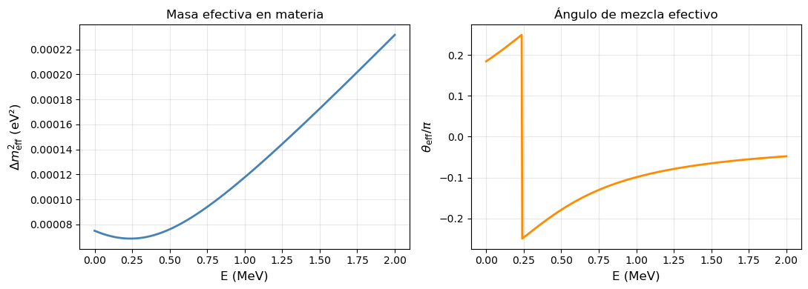
When the matter density varies along propagation, the solutions are more complicated (numerical solutions).
But if the variation of density is slow, and the initial scenario is matter dominated, as for neutrinos in the core of the sun, \(\nu_2\), they are in the same state.
In the Sun:
where \(r\) is the radius with respect to the origin
Above the resonance, neutrinos in the Sun, are \(\nu_2\), escape as \(\nu_2\) and interacts in the Earth.
Therefore the probability that a \(\nu_2\) interacts as \(\nu_e\), when it is back in vacuum:
If the energy of the neutrino is below the resonance, in the vacuum dominated, and the detector size (Earth), large compared with the oscillations, the probability is averaged:
{kind=link}
{kind=link}
Borexino at Gran Sasso, Italy, is an ultra-pure 200 t LS detector, 0.18 MeV threshold and 5% energy resolution [29]
Survival probability depends on the neutrino energy range
Exercise: The MSW resonance in the Sun
The effective mixing angle in matter is enhanced at the resonance energy: $\( E_{\rm res} = \frac{\Delta m^2 \cos 2\theta_0}{2\,V_e}, \qquad V_e \simeq 7.63\times10^{-14}\,Y_e\,\rho\;[\mathrm{g/cm}^3]\;\mathrm{eV} \)\( At resonance (\)E = E_{\rm res}\(), \)\theta_m = 45°\( regardless of the vacuum angle. For neutrinos produced above the resonance and propagating adiabatically, the exit state is \)|\nu_2\rangle\( and the survival probability simplifies to \)P(\nu_e\to\nu_e) \simeq \sin^2\theta_{12}$.
Questions:
Using the solar core density \(\rho \simeq 150\) g/cm\(^3\) and \(Y_e \simeq 0.5\), compute \(V_e\) in eV and the resonance energy \(E_{\rm res}\) for the solar parameters (\(\Delta m^2_{21}\), \(\theta_{12}\)). Do the \(^8\)B solar neutrinos (\(E\sim 5\)–15 MeV) sit above or below the resonance?
The adiabatic MSW prediction for \(^8\)B neutrinos is \(P_{ee} \simeq \sin^2\theta_{12} \approx 0.31\). Compare with the SNO CC/NC ratio (\(P_{ee} \simeq 0.34\pm0.04\)) and the Borexino measurement at \(\sim 7\) MeV. Is the agreement consistent with the adiabatic limit?
Using
oscillations.posc_matter_2fam, plot \(P(\nu_e\to\nu_e)\) vs \(E\) from 0.1 to 20 MeV at \(L = 1.496\times10^8\) km (Sun–Earth distance) for \(\rho = 0\) (vacuum) and \(\rho = 100\) g/cm\(^3\) (average solar density). Identify the resonance transition and the approach to the adiabatic limit at high energy.
KamLand Experiment#
If \(\Delta m^2_{21} \simeq 7.5 \times 10^{-5}\) eV\(^2\), oscillation can be observed with reactor neutrinos at LBL, \(\mathcal{O}(100)\) km and E \(\mathcal{O}(1)\) MeV.
{kind=link}
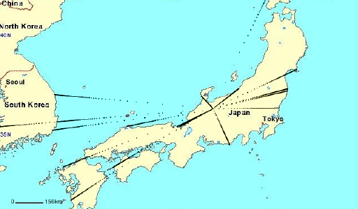
{kind=link}
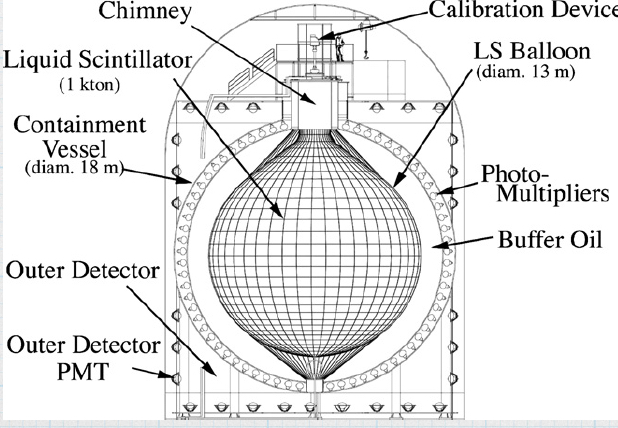
{kind=link}
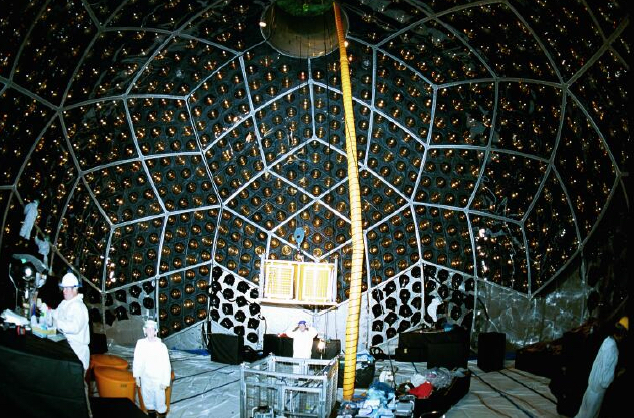
1 k ton ultra-pure liquid-scintillator in 13 m spherical balloon.
flux \(\bar{\nu}_e\) from 55 reactors in Japan and South Korea, \(L \sim 180\) km
Detection: e+ scintillation and annihilation, and \(n\) capture in H, 2.2 MeV \(\gamma\) delayed 210 \(\mu\)s
In Kamioka mine. First results in 2002 confirming \(\bar{\nu}_e\) disappearance [21]
ratio observed/expected with no oscillations: \(0.611 \pm 0.085 \pm 0.041\)
{kind=link}
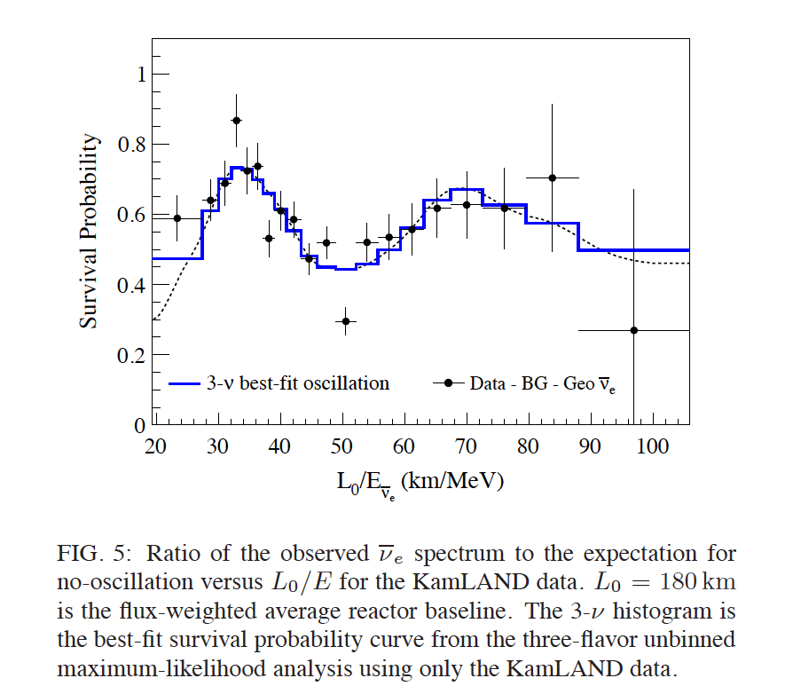
{kind=link}
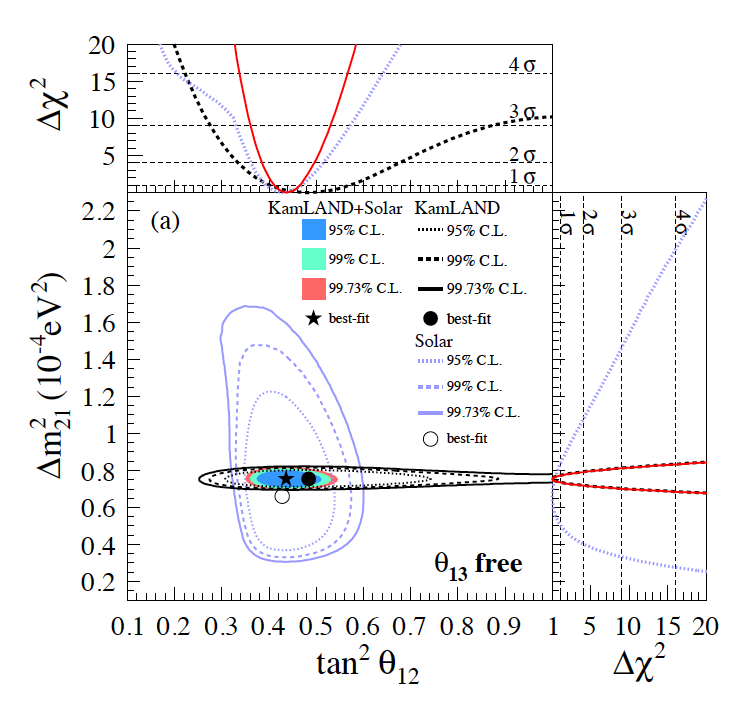
Exercise: KamLAND and the measurement of \(\theta_{12}\)
KamLAND measures \(\bar\nu_e\) disappearance from Japanese reactors at \(\langle L\rangle \simeq 180\) km with \(E_{\bar\nu}\sim 1\)–8 MeV. In the two-family approximation (atmospheric phases averaged out), the survival probability is: $\( P(\bar\nu_e \to \bar\nu_e) \approx 1 - \sin^2 2\theta_{12} \sin^2\!\left(1.267\,\frac{\Delta m^2_{21} L}{E}\right) - \frac{1}{2}\sin^2 2\theta_{13} \)$
Questions:
Compute the oscillation phase \(\phi_{21} = 1.267\,\Delta m^2_{21} L/E\) at \(L = 180\) km for \(E = 3\), 5 and 7 MeV. At which energy is \(\phi_{21} = \pi/2\) (first oscillation minimum)? Compare with the KamLAND oscillation figure above.
The KamLAND measured ratio (corrected for \(\theta_{13}\)) is \(R \approx 0.498\pm0.044\). Using \(\langle\sin^2\phi_{21}\rangle = 1/2\) (energy-averaged), extract \(\sin^2 2\theta_{12}\) and compare with NuFit-6.0.
Using
oscillations.posc_2fam, plot \(P\) vs \(L/E\) for KamLAND parameters (\(\Delta m^2_{21}\), \(\theta_{12}\)) over \(L/E \in [10^1, 10^4]\) km/GeV. Mark the KamLAND operating point (\(L/E \approx 180\,\mathrm{km}/3\,\mathrm{MeV} = 6\times10^4\) km/GeV). Is the experiment in the resolved-oscillation or averaged regime?
Solution of Solar Neutrino Problem#
The MSW adiabatic flavour transitions in the solar matter, the so-called large mixing angle (LMA) with parameters:
Confirmed total SSM \(\nu\) flux with SNO+ NC data.
Confirmed oscillation with reactor neutrinos LBL KamLAND experiment.
Atmospheric neutrinos#
Neutrinos are produced in the cascades generated by cosmic rays impinging on the atmosphere
For every \(\pi\) there are 2 \(\nu_\mu\) and 1 \(\nu_e\) (\(\nu\) and \(\bar{\nu}\))
Range of Energy is very large: 0.1-100 GeV
Range of distance, L, is also large: 10 - 100 km
Flux depends on Energy
SuperKamiokande can detect \(\nu_e, \nu_\mu\) via inverse decay.
SuperKamiokande#
{kind=link}
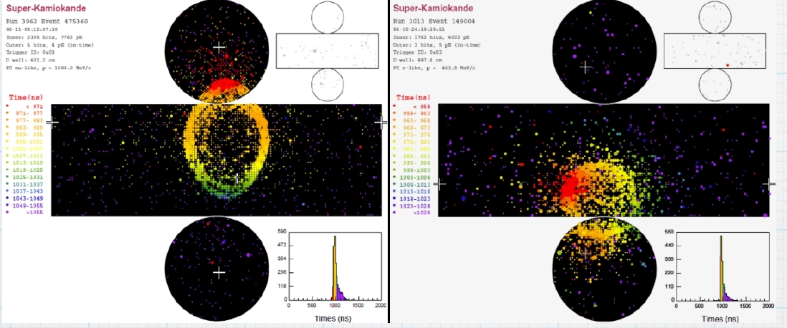
Lepton direction indicates \(\nu\) direction
There are fully contained, stopping, upward, through-going muons different E ranges
In 1998 SK observed a deficit of up-going muons [24]
{kind=link}
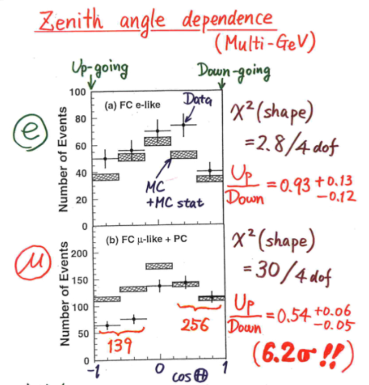
Up/Down asymmetry: $\( \mathcal{A}_{UD}= 0.296 \pm 0.048 \pm 0.001, \)$
{kind=link}
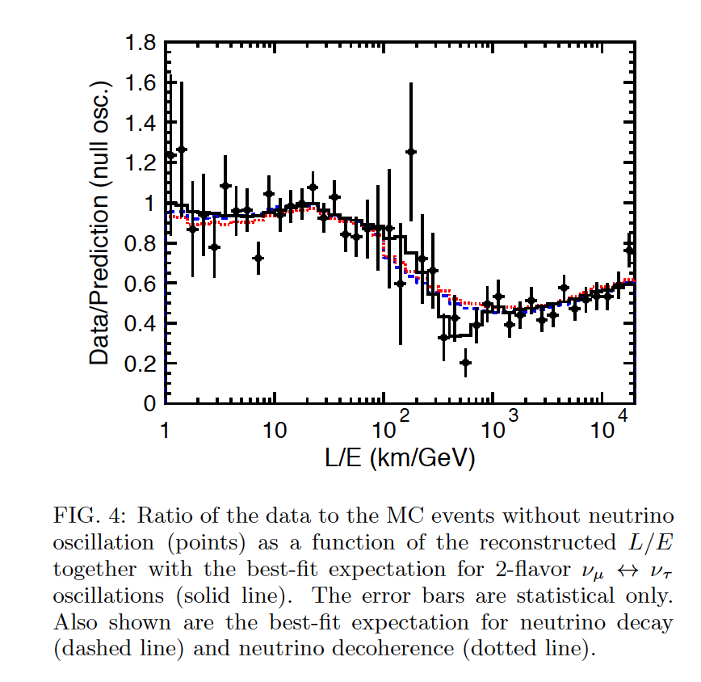
Evidence of oscillation pattern [25]
{kind=link}
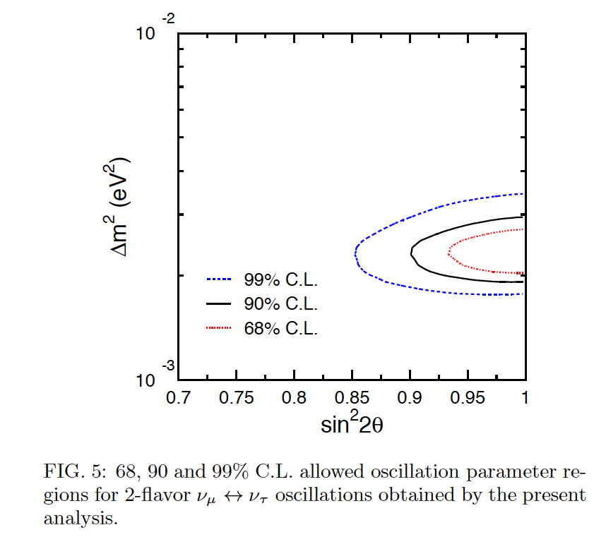
Best parameters [25]
{kind=link}
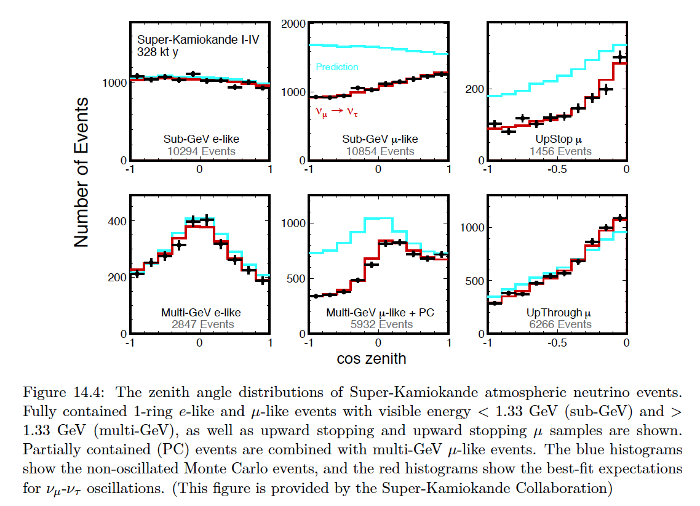
Exercise: SuperKamiokande and the Up/Down asymmetry
Atmospheric neutrinos from cosmic-ray showers are produced at height \(h \simeq 20\) km. The path length to SK depends on the zenith angle \(\theta_z\): $\( L(\theta_z) = \sqrt{(R_E\cos\theta_z)^2 + 2R_E h} \;-\; R_E\cos\theta_z \)\( with \)R_E = 6371\( km. Downward (\)\theta_z = 0°\(): \)L \sim h\(. Upward (\)\theta_z = 180°\(): \)L \sim 2R_E \approx 12,756$ km.
Questions:
Compute \(L\) for \(\theta_z = 0°\), \(90°\) and \(180°\). For \(E_\nu = 1\) GeV and \(\Delta m^2_{32} = 2.5\times10^{-3}\) eV\(^2\), compute \(\phi_{32}\) for each direction. Which zenith range has \(\phi_{32}\sim\pi/2\)?
The SK Up/Down asymmetry for multi-GeV \(\mu\)-like events is \(\mathcal{A}_{UD} = (U-D)/(U+D) = -0.296\pm0.048\). In the two-family approximation, \(\mathcal{A}_{UD} \approx -\sin^2(2\theta_{23})\,\langle\sin^2\phi\rangle\) with \(\langle\sin^2\phi\rangle \approx 0.5\) for the upward sample. Extract \(\sin^2(2\theta_{23})\) and compare with NuFit-6.0.
Plot \(L(\theta_z)\) and \(P(\nu_\mu\to\nu_\mu)\) vs \(\cos\theta_z\in[-1,+1]\) for \(E = 1\) GeV using
oscillations.posc_2famwith atmospheric parameters. Overlay the no-oscillation line and identify the zenith region of maximum sensitivity.
Confirmation of Atmospheric oscillations#
{kind=link}
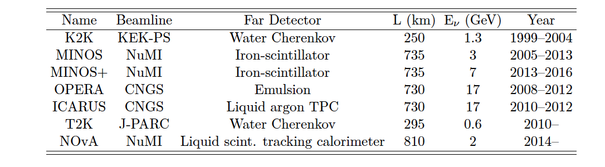
The atmospheric \(\Delta m^2 \simeq 2.5 \times 10^{-3}\) eV\(^2\) is accessible with accelerator \(\nu_\mu\) neutrinos of \(\mathcal{O}(1)\) GeV at \(\mathcal{O}(1000)\) km.
T2K#
T2K 0.6 GeV \(\nu_\mu (\bar{\nu}_\mu)\) from JPARC to SK at 290 km.
T2K exploits the fact that the neutrino spectrum is narrower (but less intense) off-axis by 2.5\(^o\) degrees.
A near and a far detector to estimate flux and control systematic errors.
Far Detector is SuperKamiokande
{kind=link}
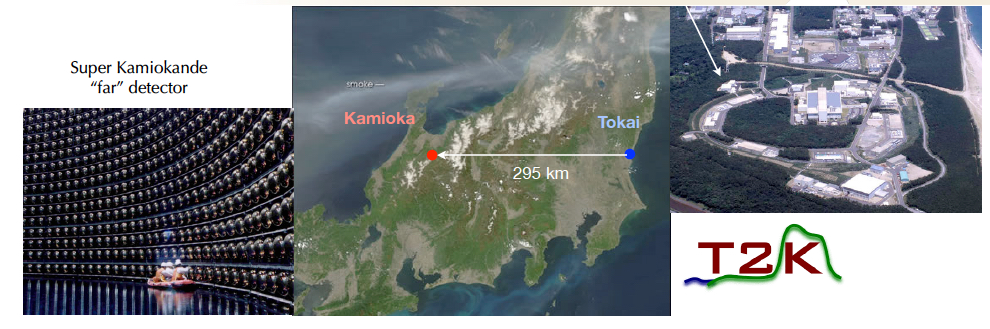
{kind=link}
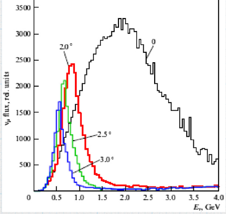
Neutrino flux for different off-axis angles.
{kind=link}
Measure \(\nu_\mu\) disappearance (relevant for atmospheric oscillations)
Measure \(\nu_e\) appearance (see later)
Beam with \(\bar{\nu}_\mu\) and \(\nu_\mu\) (relevant for CP and matter effects, see later)
MINOS#
{kind=link}
{kind=link}
{kind=link}
MINOS experiment at Soudan Mine, 730 km from FermiLab NuMI beam peak at 3 GeV
5.4 ktons iron-scintillation tracking planes and calorimeter (486 planes, 30 m long, 8 m high)
similar near detector 0.9 ton
magnetized iron-tracking, separation \(\mu^+/\mu^-\)
{kind=link}
MINOS (2013) [26]
{kind=link}
oscillation probability from MINOS+ (2014)
Oscillations with 3 neutrinos#
{kind=link}
The neutrino oscillation with \(n\) families is governed by a complex unitary matrix
With vacuum plane wave propagation the oscillation amplitude:
{kind=link}
Where \(s_{13} = \sin \theta_{13}, \; c_{13} = \cos \theta_{13}\). The CP phase is \(\delta\).
Solar oscillations amplitude is ruled by \(\theta_{12}\) while atmospheric by \(\theta_{23}\).
Notice: If neutrinos are Majorana there are two phases more (see next chapter)
{kind=link}
From the amplitude:
We obtain the oscillation probability:
With:
and \(p\)-index arbitrary (i.e 1)
Manipulating the amplitude:
Computing the probability:
with \(i > j\):
CP, T and CPT symmetry#
We can study CP, T, CP transformations:
Mass ordering#
In Nature, we have measured two mass squared differences:
There are at least three massive neutrinos, we define two mass squared differences:
{kind=link}
That correspond to the normal (NH) and inverted (IH) mass hierarchies.
The ratio:
With:
We have:
The oscillation probability in terms of \(\Delta m^2_\odot, \, \Delta m^2_A\):
Oscillation probability in experimental scenarios#
Let’s consider the case of atmospheric neutrinos with accelerator. MINOS experiment with \(L \sim 750\) km and \(E \sim 1-5\) GeV:
For the survival probability \(\nu_\mu \to \nu_\mu\), using the standard U-PMNS parameterization, we get:
with \(U_{\mu3} = s_{23}c_{13}\):
Now consider the case \(s_{13} \sim 0, \, c_{13} \sim 1\):
And we recover the two-family oscillation formula.
We can compute now the probability to oscillate to other flavors at MINOS, with the previous approximations:
Notice that as \(\mathcal{P}(\nu_\mu \to \nu_e)\) is suppressed, then it is sensitive to second-order effects,
For the atmospheric case with reactor neutrinos. KamLAND experiment with \(L=180\) km and \(E \sim 1-5\) MeV.
The atmospheric oscillation is then averaged \(\sin^2 \phi_A = 1/2, \sin \phi_A = \cos \phi_A = 0\), we have:
With \(U_{e2} = s_{12} c_{13}\) and \(U_{e3} = s_{13} e^{-i\delta}\), and taking \(s_{13} \sim 0, \, c_{13} \sim 1\):
Now consider the case of reactor neutrinos in the atmospheric regime: DayaBay experiment with \(L=1\) km and \(E \sim 1-5\) MeV.
Now:
with \(U_{e3} = s_{13}\), we get:
The amplitude of the oscillation corresponds to \(\sin^2 2 \theta_{13}\).
Interactive oscillation: three families (PMNS)#
The default parameters correspond to the NuFit-6.0 (2024) [33] global fit, Normal Ordering (NH), with \(\Delta m^2_{21}\) and \(\sin^2\theta_{12}\) updated with the first results from JUNO [38]:
Slide the controls to explore the dependence on energy and distance, or to compare different parameter values.
import oscillations
oscillations.plot_3fam_interactive()
Next: Experimental Evidence#
The experimental results — solar, atmospheric, reactor (θ₁₃), long-baseline (δ_CP, mass ordering) and the new generation of experiments — are covered in the companion notebook Neutrino Oscillations: Experimental Evidence.